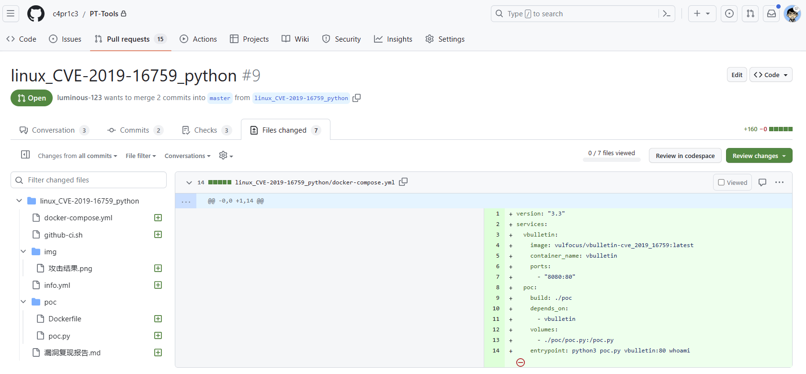
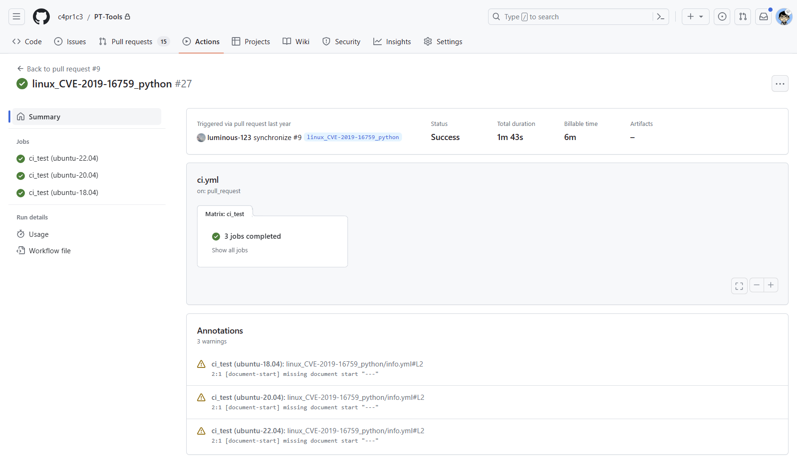

2023 年教学计划
课程基本信息
- 主讲教师：黄玮、安靖
- 课程主题：网络空间安全三年专业课综合运用和实践
- 实验准备：自备电脑，自行安排时间和地点
- 上课方式：集中授课1次+分组学习+自行组队完成大作业
课程阶段计划
本次小学期设计了 团队实践训练 和 单兵作战 任务。顾名思义，团队实践训练 采取同学们自由组队 分组完成 方式，每个小组至多允许 6 人，建议 4 人最佳；单兵作战 采取个人独立完成方式。同学们将在开课当天通过课程群里的腾讯问卷方式完成结课任务类型的选择。
分组完成 和 单兵作战 至少「二选一」，鼓励学有余力的同学「多劳多得」。
本次小学期 2 周时间的 团队实践训练 将提供 2 种难度级别的实践任务： 基础团队实践训练 和 进阶团队实践训练。单兵作战 提供 2 种类别的实践任务：基础单兵作战 和 攻防演练活动个人突出贡献总结 。4 种实践任务的具体要求如下：
1. 基础团队实践训练
团队分工跟练复现完成 网络安全(2021) 综合实验 。无论团队由多少人所组成，以下按本次实践训练所涉及到的人员能力集合划分了以下团队角色。一人至少承担一种团队角色，老师将按照该角色的评价标准进行 基于客观事实的主观评价 。
- 红队：需完成漏洞存在性验证和漏洞利用。
- 蓝队威胁监测：漏洞利用的持续检测和威胁识别与报告。
- 蓝队威胁处置：漏洞利用的缓解和漏洞修复（源代码级别和二进制级别两种）。
上述能力的基本评分原则参考“道术器”原则：最基础要求是能够跟练并复现 网络安全(2021) 综合实验 中演示实验使用到的工具；进阶标准是能够使用课程视频中 未使用 的工具或使用编程自动化、甚至是智能化的方式完成漏洞攻击或漏洞利用行为识别与处置。
2. 进阶团队实践训练
参照 信息安全竞赛国赛 的 创新实践能力团队赛 赛制展开专业综合实践训练。具体来说，参考 第十二届全国大学生信息安全竞赛创新实践能力赛 分区选拔赛应用场景开发需求 、 第十二届全国大学生信息安全竞赛-创新实践能力赛 线下分区选拔赛参赛指南 和我们的具体评分标准。
3. 基础单兵作战
基础单兵作战 任务目标为构建 若干 包含 指定漏洞 的靶标环境并完成漏洞利用验证， 按要求打包 整套环境。
如 下图一 所示是一个满足上述要求的漏洞靶标环境的源代码目录结构示例。

如 下图二 所示是使用 Github Actions 在线验证漏洞靶标的漏洞可利用性的示例。

4. 攻防演练活动个人突出贡献总结
符合以下条件之一的同学，请提交个人演练活动总结报告：
- 参与前期红队模拟自查加固活动和正式攻防演练期间的威胁监测与研判处置工作，累积工作时长超过 80 小时。
- 独立发现并报告高危漏洞 1 个或以上，并提供漏洞修复建议并被接受采纳。
- 独立发现并报告中危漏洞 5 个或以上，并提供漏洞修复建议并被接受采纳。
总结报告具体要求如下：
- 参照
结课大作业基本要求里的实验报告相关撰写基本要求。 - 所有敏感数据（参照《数据安全法》和《个人信息保护法》相关法律规定要求，例如身份证号、手机号、姓名、宗教信仰、政治面貌等信息）、真实信息系统的截图均需要做 脱敏处理 ，禁止在结课材料中包含任何形式可能导致敏感信息泄露或敏感信息推断的信息。
结课大作业基本要求
共性要求
- 实践训练过程中产生的文档、代码均可以采用 Github/Gitlab/Gitee 的方式管理（这是一个鼓励和支持的作业完成过程建议，有助于提高印象分哦～）；
- 结课材料，统一用zip格式打包并提交到学校畅课平台指定作业模块（后续在课程微信群、畅课平台课程公告模块进行通知，注意查看）。附件命名规范：
姓名1_姓名2_姓名3_姓名4_姓名5_姓名6_作业题目.zip；- 姓名先后顺序按照对结课作业的贡献程度排名；
- 每人 独立完成一份 「创新实践能力团队赛」总结技术报告；
- markdown 书写，建议参照 基于 Markdown 的中文文档排版规范 对实验报告进行排版；
- 内容重点强调：个人在本次大作业中的主要贡献；完成了哪些自认为有技术含量的工作；印象深刻的一些 bug 和自己的解决方法；
- 附件大小请控制在 10MB 以内，删除不必要的临时文件、视频文件、开发和测试过程中上传的测试文件等；
- 视频文件可以上传到第三方视频网站，然后在总结报告文档中附上视频链接即可，以减少压缩包大小；
- 已在 Github 上传所有文件的小组，在实验报告中同样需要附上项目仓库地址备查。
- 结课材料提交 DDL：2023.7.28 23:59:59。
附件大小请控制在 10MB 以内，删除不必要的临时文件、视频文件、开发和测试过程中上传的测试文件等。
单兵作战
- 若干 的数量定义会影响最终成绩。不同漏洞靶标的构建难度差异较大，因此不限定具体数量的漏洞靶标和最终成绩之间的确定关系，由老师根据具体漏洞靶标构建难度进行 基于客观事实的主观评价 。能者多劳，多多益善。保底及格要求是独立完成一个 低重复度 的漏洞靶标构建和漏洞利用验证。
- 低重复度 指的是不超过 3 人重复构建同一个漏洞靶标。
- 指定漏洞所影响软件范围如下，为了避免漏洞环境重复，请在动手构建靶标之前先和授课老师报名确认后再动手：
-
漏洞构建标准详见私有仓库 c4pr1c3/PT-Tools 。
-
[ ] FTP
- [ ] MS-SQL
- [ ] Oracle
- [ ] MySQL
- [ ] SQL Server
- [ ] DB2
- [ ] MariaDB
- [ ] 达梦数据库
- [ ] Informix
- [ ] Gbase
- [ ] SQLlite
- [ ] VxWorks
- [ ] AIX
- [ ] Solaris
- [ ] BSD
- [ ] PHP 及相关主流流行开发框架
- [ ] Python 及相关主流流行开发框架
- [ ] Java 及相关主流流行开发框架
- [ ] Go 及相关主流流行开发框架
- [ ] Node.js 及相关主流流行开发框架
团队实践训练
- 完成「漏洞攻防实训」；
- 分组完成 作业过程中产生的文档、代码均可以采用 Github/Gitlab/Gitee 的方式管理（这是一个鼓励和支持的作业完成过程建议，有助于提高印象分哦～）；
推荐的实验报告目录组织形式
├── 0_张三
│ └── README.md
├── 1_李四
│ └── README.md
├── 2_王五
│ └── README.md
├── 3_赵六
│ └── README.md
└── README.md
- 如果是选择
单兵作战的同学，则无需创建以自己姓名命名的子目录。上述一级子目录名请更换成具体实验任务名，例如CVE-2020-5504、CVE-2012-2122。根目录下的README.md内容只需要提供提供所完成的具体实验任务的相对链接信息即可，如下所示：
- [CVE-2020-5504 漏洞复现验证报告](CVE-2020-5504/README.md)
- [CVE-2012-2122](CVE-2012-2122/README.md)
- 如果是选择在 公开仓库 提交作品，则无需实名命名上述子目录，可以使用自己的
网络 ID，但是在打包提交到畅课作业区的最终实验报告目录里需要使用实名。 - 根目录下的
README.md内容统一要求如下，示范README见ac-demo：
# 作品名
> 一句话简介。
## 功能清单
> 列表形式说明逐个功能要点。
## 本项目用到的关键技术
> 本作品中包含的密码学理论与技术示范应用要点说明，列表形式、逐个要点说明。
## 快速上手体验
> 快速安装与使用方法说明。
## 演示
> 课程结题报告与系统功能操作视频演示地址。
## 附录-1 （可选）
## 附录-2 （可选）